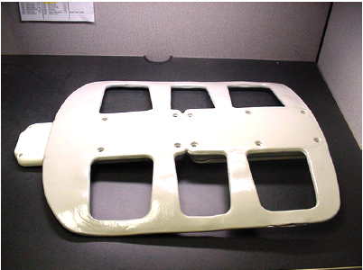
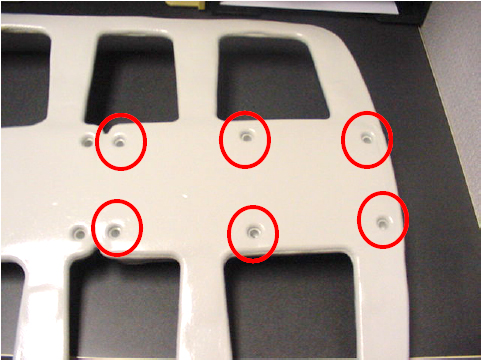
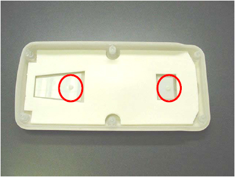
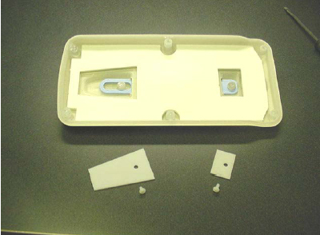
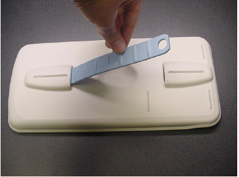

Operating Documentation
Direction 5500113, Rev# 3
Discovery MR450 1.5T Service Methods
Module Version 2.0, Version Date 5/18/09
Operating Documentation |
| Required Persons | Preliminary Reqs | Procedure | Finalization |
|---|---|---|---|
| 1 | Not Applicable | 30 mins | Not Applicable |
The Anterior coil’s handle can break after repeated use. The kit 2418437 includes all components required to replace the Anterior Handle.
| Item | Qty | Effectivity | Part# | Manufacturer | |
|---|---|---|---|---|---|
| #2 Flat head screwdriver | 1 | - | - | - | |
| Item | Qty | Effectivity | Part# | Manufacturer | |
|---|---|---|---|---|---|
| FMI Kit Anterior handle, Handle cover end, Handle cover Middle, (2) M4 X 10mm NY, PNHD screws | 1 | - | 2418437 | - | |
| Condition | Reference | Effectivity |
|---|---|---|
Broken Anterior Handle. | - | - |
Place the anterior section of the coil foam side up on the work area. See Illustration 1.
Illustration 1: Place The Anterior Section Of The Coil Foam Side Up

Locate and remove the 6 screws holding the smaller anterior cover in place. See Illustration 2.
| NOTE: | Make sure that you do not damage the foam while performing this step. |
Illustration 2: Remove The 6 Screws Holding The Smaller Anterior Cover

Locate and remove the 2 screws holding the ends of the handle on the inside of the cover. See Illustration 3.
Illustration 3: Locate And Remove The 2 Screws Holding The Ends Of The Handle

Lift the covers to expose the ends of the handle. See Illustration 4.
Illustration 4: Lift The Covers To Expose The Ends Of The Handle

Lift the ends of the handle off of the posts and pull the handle out of the slots in the cover.
| NOTE: | It may be necessary to pry the one end of the handle off of its post. See Illustration 5. |
Illustration 5: Lift The Ends Of The Handle Off Of The Posts And Pull The Handle Out

Place the ends of the new handle in the slots of the cover, making sure it is orientated as shown.
Place the covers over the ends of the handle and secure them in place with their screws.
Place the cover back on the anterior section of the coil and secure it in place by retightening the 6 screws.
Perform Signa 1.5T HD 8 CH Body Array Coil Setup for SNR Test to ensure proper operation of the coil.